A concept rebrand for BYC, a Korean innerwear label since 1946. The new name is the old one, read out loud: be, why, see.
보이지 않는 옷이 보이는 이유가 된다.
View on BehanceCase study
A concept rebrand for BYC, a Korean innerwear label since 1946. The new name is the old one, read out loud: be, why, see.
보이지 않는 옷이 보이는 이유가 된다.
View on Behance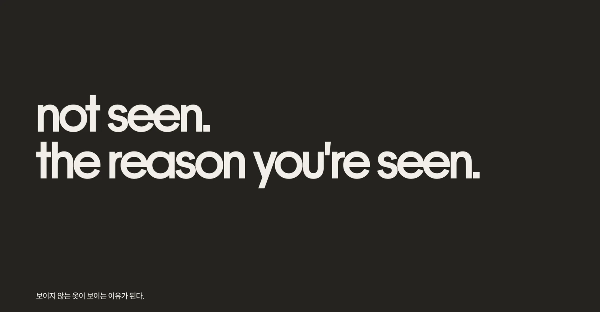
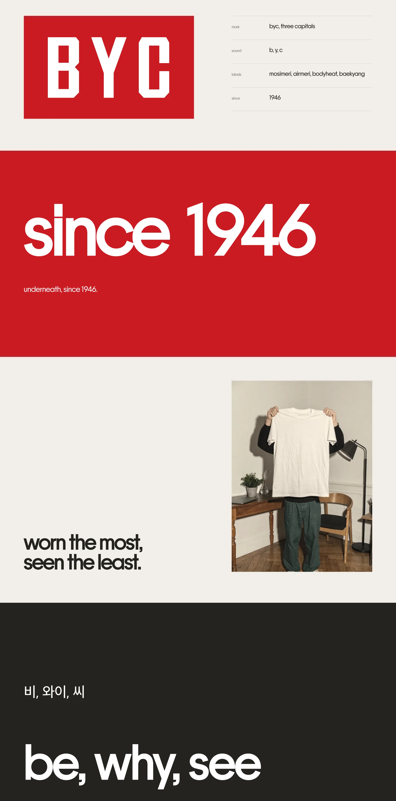
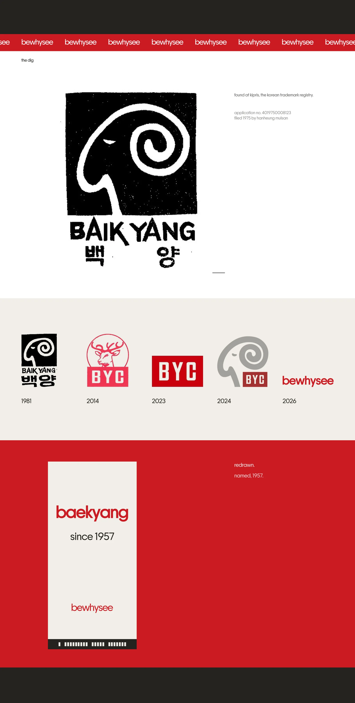
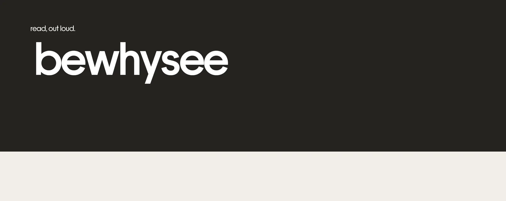
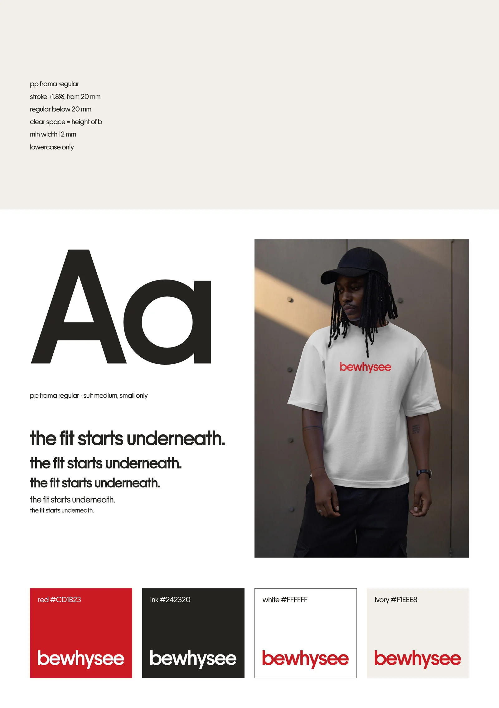
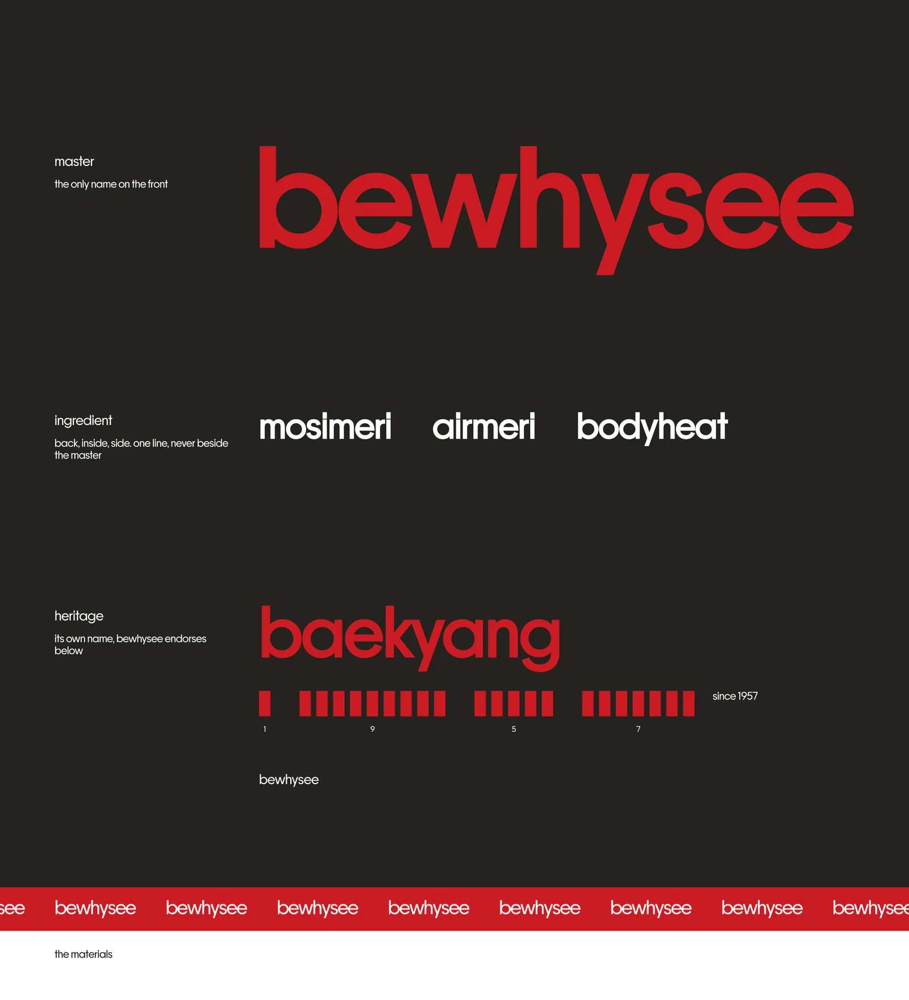
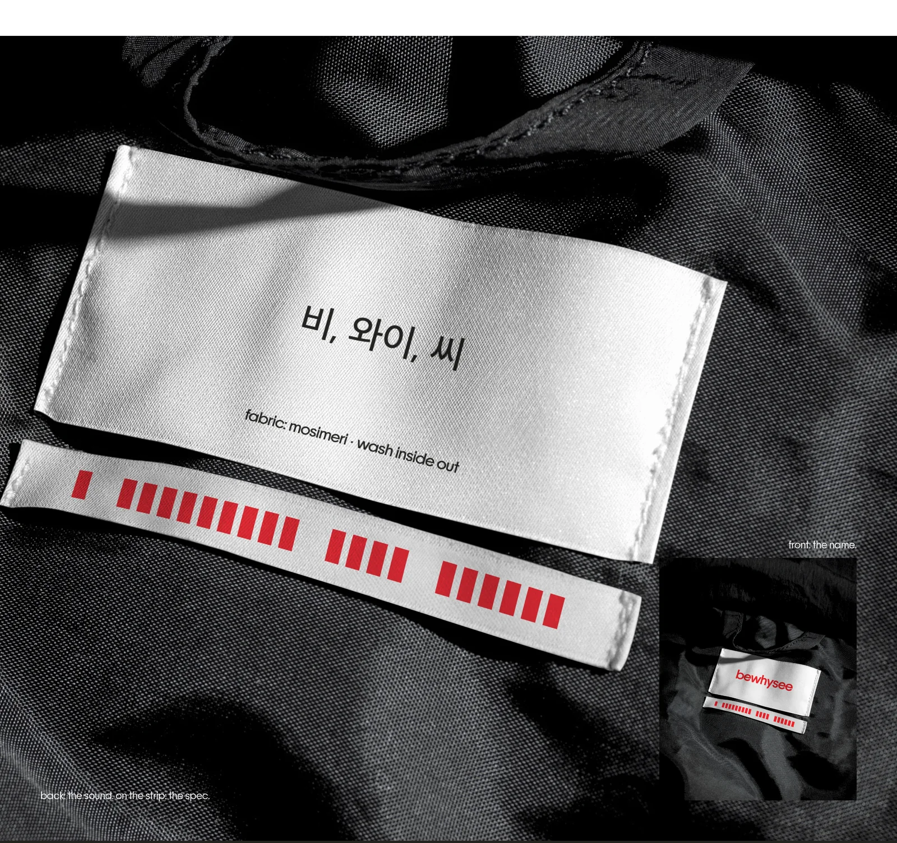
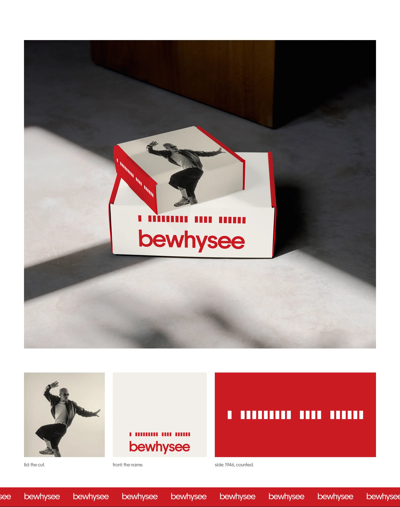
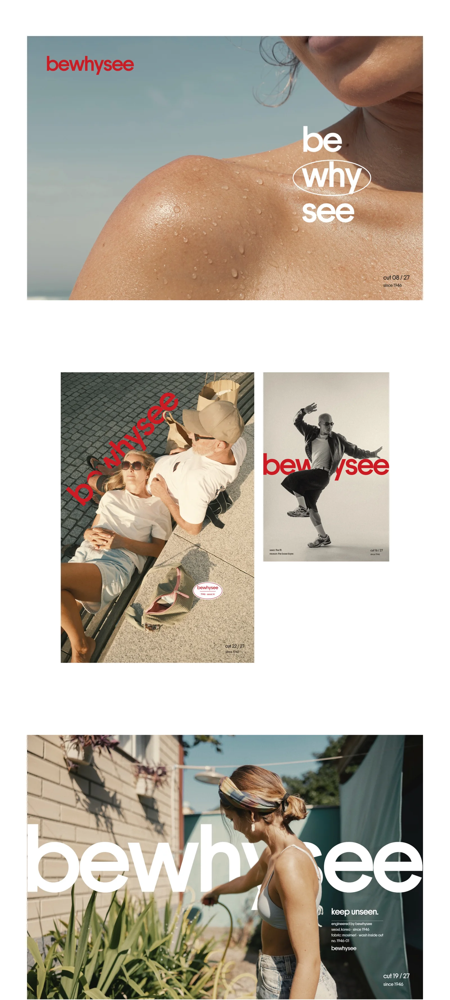
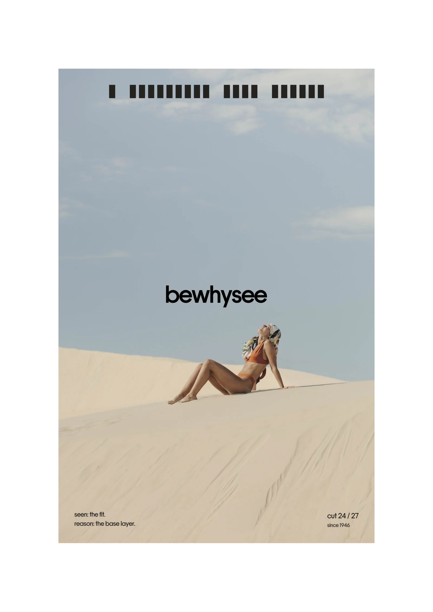
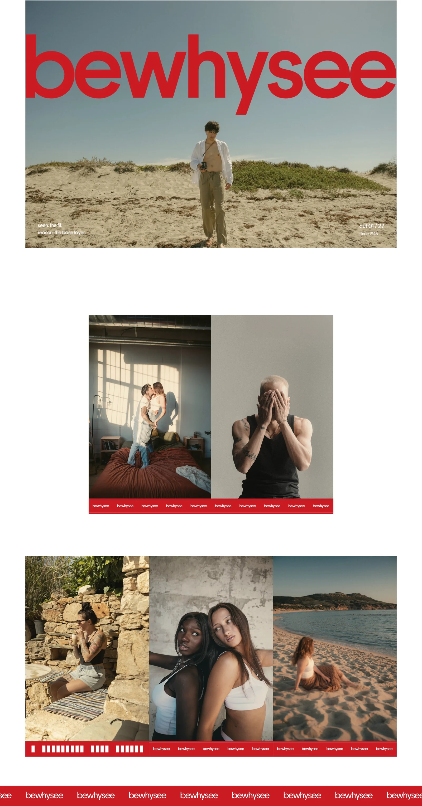